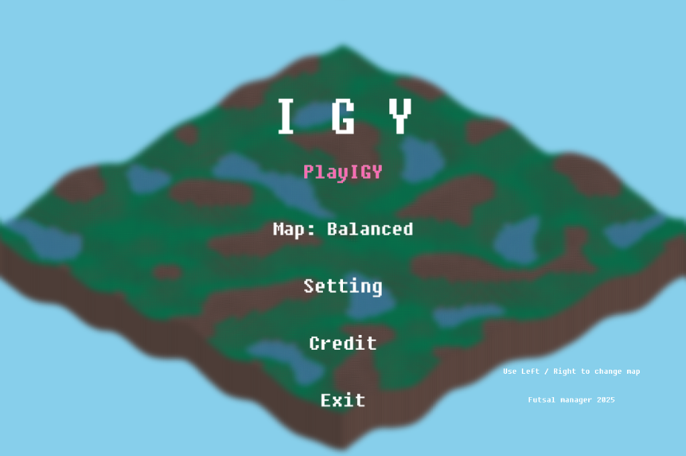
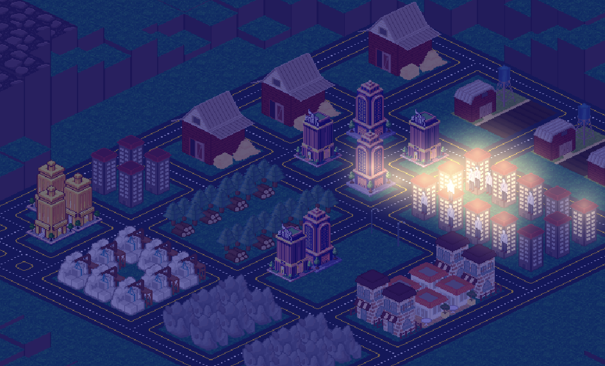
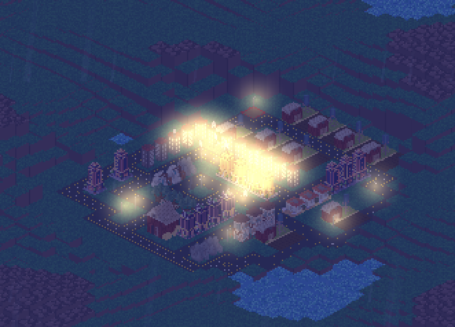
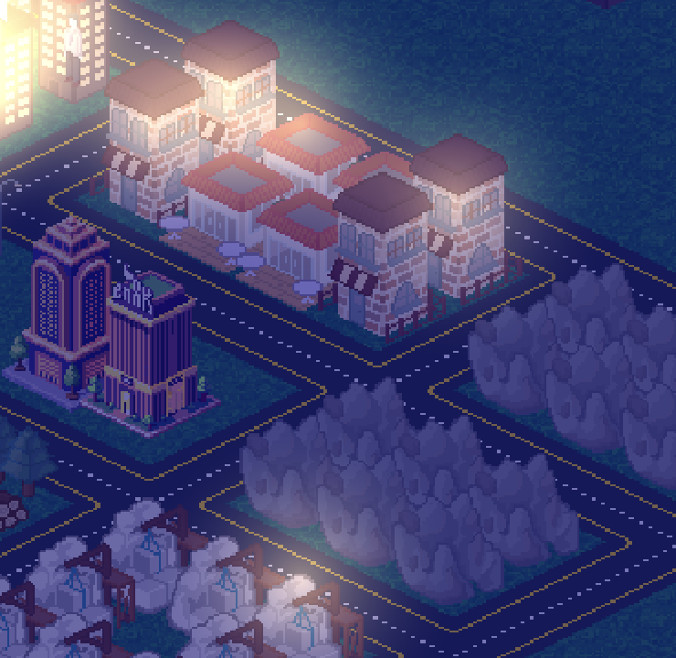
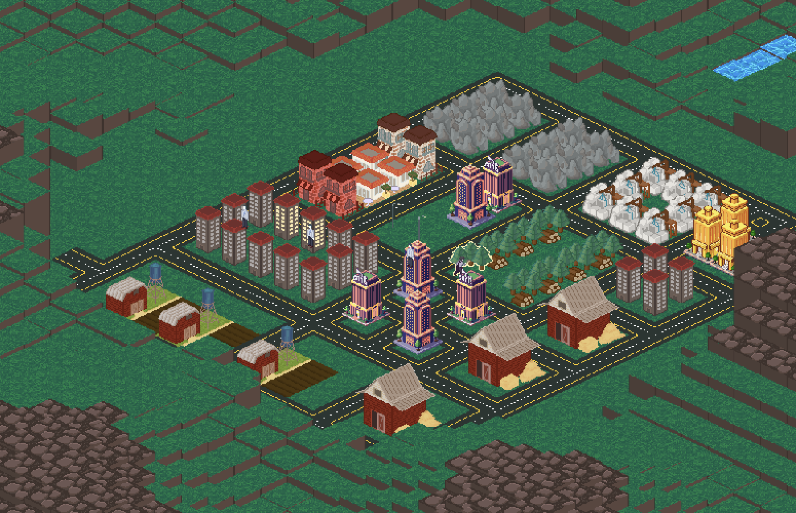
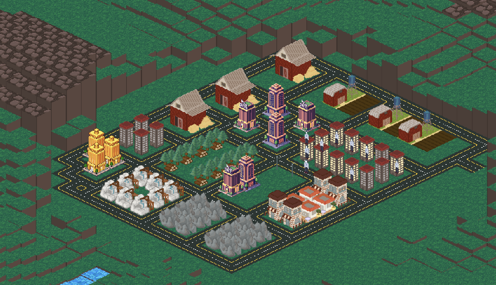

Elevator Pitch
I.G.Y. is a city builder game where you take on the role of mayor, balancing your citizens' happiness against your city's finances.
Proprietary DokeV Engine
A custom OpenGL-based engine built on a strict, 5-layered decoupled architecture, completely isolating heavy simulation loops from rendering calls.Windows, Linux, Web
Genre: City Builder / Simulation Development Stage: Active Development (Milestone 7)OpenGL 3.3 Compatibility
OS: Windows 10/11 (64-bit) CPU: Intel i5 or equivalent RAM: 8GB GPU: OpenGL 3.3 compatibleFutsal Manager 2025/2026
I.G.Y. is a city builder game where you take on the role of mayor, balancing your citizens' happiness against your city's finances. Far from a passive building sandbox, the game demands tactical planning of infrastructure, road networks, and zoning layouts. Your main objective is to balance industrial expansion with ecological stability and resident satisfaction.
Gameplay centers around a delicate balancing act: industrial and commercial sectors generate critical revenue but emit debilitating noise pollution that erodes nearby residential happiness. To counter this, players must strategically incorporate green spaces, parks, and quiet zones, keeping commutes short and the city grid efficient.
Players design the city grid by planning road networks, infrastructure, and zoning layouts. Balance industrial and commercial growth with residential zones, and build public gardens to offset noise pollution. Keep commutes short and the city grid efficient, while monitoring citizen needs (hunger, fatigue, happiness) and navigating terrain elevation.
Residents monitor real-time needs including hunger, fatigue, and happiness, establishing dynamic work-life-sleep cycles.
Build on complex terrain featuring multi-layered verticality and spatial height restrictions.
Strategic optimization required to offset industrial noise pollution with public gardens.
Seamless drag-and-place functionality for road construction alongside instant visual validation (Green/Red feedback cursor).
To support pixel-perfect selection on multi-layered isometric tiles, coordinates are encoded into an off-screen RGB frame buffer, resolving selection checks in efficient O(1) time complexity.
A custom OpenGL-based engine built on a strict, 5-layered decoupled architecture, completely isolating heavy simulation loops from rendering calls.
ImGui-integrated toolsets allow rapid data balancing and matrix adjustment without needing source code recompilation.
IGY is developed by Futsal Manager 2025/2026, a team of dedicated engineering students at DigiPen Institute of Technology.
Discover the complexity of urban optimization. Download the IGY playable demo and access full media kits today by visiting our official repository.
Media Contact:
dongyun.lee@studiowantoo.com




